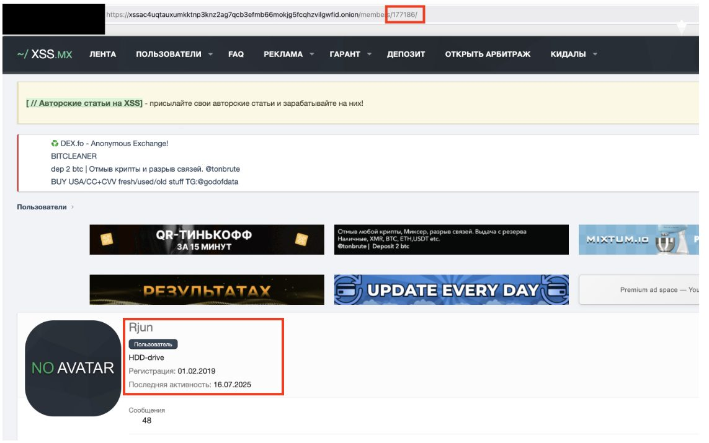
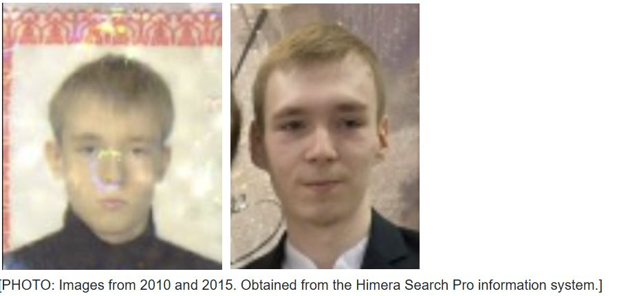
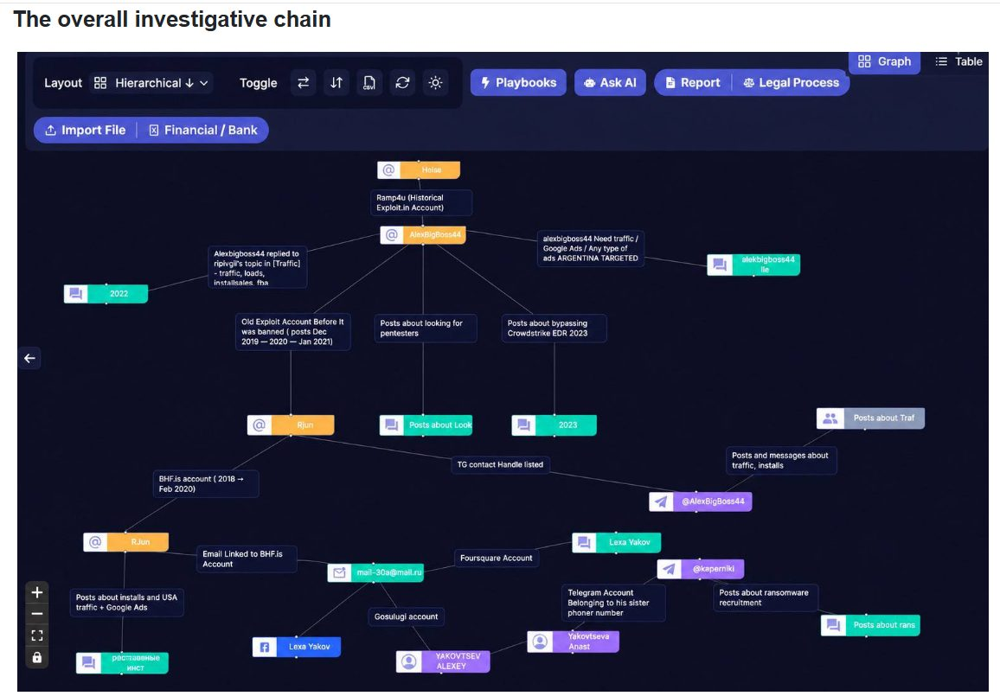

The investigation attempts to reconstruct the administrator's digital footprint through historical RAMP forum approval records, Exploit and XSS forum accounts, leaked registration databases, Telegram activity and Qilin affiliate advertisements.
Its central argument is that multiple independently collected digital identifiers and historical records converge on the same operator.
The investigation claims a high degree of confidence in its attribution. However, its conclusions rely partly on leaked databases and account-linkage assumptions that cannot be independently validated from the published material alone.
This report examines the evidence chain, operational timeline, Qilin's ransomware ecosystem and the broader implications for threat intelligence.
- Qilin: Understanding the Ransomware Operation
Qilin operates under a ransomware-as-a-service (RaaS) model.
In this structure, ransomware developers and administrators maintain the underlying operation, while affiliates conduct attacks against selected organisations.
The investigation describes several operational roles:
Administrators: Manage the ransomware operation, affiliate relationships and infrastructure.
Affiliates: Conduct intrusions and deploy ransomware against victims.
Developers: Maintain ransomware capabilities and supporting tools.
Negotiation operators: Support ransom communications and pressure campaigns.
Infrastructure operators: Maintain services used by the ransomware ecosystem.
The investigation identifies Haise as a prominent public administrator involved in promoting and managing Qilin's affiliate programme.
- Haise: Public Activity and Ransomware Operations
According to the investigation, Haise first appeared on the underground criminal forum RAMP on May 29, 2022.
The report describes the following developments:
February 2023: Haise was reportedly advertising Qilin's affiliate programme.
July 2023: Haise discussed the group's financial arrangement, stating that affiliates received ransom payments and transferred a share, typically 15–20%, to the operators.
July 2024: Continued recruitment activity was identified on RAMP.
April 1, 2025: Haise announced a new ransomware release and a DDoS feature within the affiliate panel.
June 2025: The investigation reports promotion of a feature called "Call lawyer", intended to increase pressure during victim negotiations.
These activities illustrate the administrative and commercial functions associated with a ransomware-as-a-service operation.
The report also references research by Group-IB, SANS and Halcyon describing Haise as an administrator or key Qilin operator.
- Cross-Platform Digital Footprint Correlation
One of the most significant parts of the investigation is its attempt to connect Haise's RAMP identity with accounts on other underground platforms.
The researchers examined historical RAMP user-approval records dated June 3 and June 21, 2022.
These records reportedly contained lists of applicants and corresponding profiles on other underground forums.
The investigation identifies two associated profiles:
An Exploit forum profile using the alias alexbigboss44.
An XSS forum profile using the alias Rjun.

The report further describes historical account information and contact references that it uses to connect these aliases.
This approach demonstrates how historical forum records can become valuable attribution sources when usernames, account references and communication identifiers overlap across platforms.
However, account correlation alone does not necessarily prove that one individual controlled every associated account.
- Historical Registration Records and Identifier Correlation
The investigation next examines historical registration information from underground platforms.
It describes connections between the Rjun alias, historical forum registration records and email-based identifiers found in older database exposures.
The researchers use these records to build a bridge between previously observed underground identities and a claimed real-world identity.
For responsible publication, the private email addresses, telephone numbers, government identifiers, residential information and family-related records contained in the investigation are not reproduced here.
An important limitation is that leaked registration databases may contain outdated, inaccurate or improperly attributed information. Shared identifiers can also be reused, transferred or exposed through unrelated compromises.
Consequently, such records should be treated as supporting intelligence rather than definitive proof of identity.
- Telegram Activity and Technical Interests
The investigation also examines historical Telegram activity associated with an account it links to the previously identified aliases.
The published material describes activity spanning September 2018 to July 2024.
The reported discussions cover several areas of underground cybercrime activity:
Ransomware development: Discussions involving ransomware projects, development capabilities and source-code availability.
Endpoint security: Conversations concerning EDR products, including CrowdStrike, and attempts to understand or bypass endpoint security controls.
Virtualisation infrastructure: Technical discussions involving VMware ESXi and Linux-related environments.
Underground recruitment: Messages advertising penetration-testing personnel with experience across Windows, Linux, ARM, NAS and ESXi environments.
Criminal ecosystem participation: Discussions involving RAMP, ransomware developers and other underground communities.
These observations provide context for the account's reported technical interests and its participation in ransomware-related communities.
However, participation in a technical discussion or criminal forum does not independently prove responsibility for a specific ransomware deployment.
- Qilin Affiliate Advertising and Temporal Correlation
Another important element involves Qilin-related advertisements observed in Telegram groups.
According to the investigation:
On July 29, 2024, a message discussed Qilin and RansomHub being added to the Scattered Spider arsenal.
Approximately one week later, a Qilin affiliate advertisement appeared in the same Telegram group.
Additional advertisements were reportedly identified on July 22, July 29 and August 7, 2024.
The investigation uses these advertisements, the account's historical presence in the same communities and overlapping identifiers to strengthen its attribution argument.
Temporal correlation can provide useful investigative context, especially when combined with independent account-linkage evidence.
Nevertheless, appearing in the same group as an advertisement does not establish that an individual created, distributed or operated the advertised ransomware service.
- The Investigation's Attribution Chain
The published investigation describes a multi-stage correlation process:
Identify Haise through historical RAMP administrator and affiliate activity.

Examine RAMP approval records to locate associated underground forum profiles.
Correlate the identified Exploit and XSS profiles with other historical account information.
Examine registration records and previously exposed identifiers.
Review historical Telegram activity for ransomware-related technical discussions.
Correlate account activity with Qilin affiliate advertisements.
Compare the resulting relationships in both forward and reverse directions.
The investigation argues that the convergence of these records provides strong support for its attribution hypothesis.
From a threat-intelligence perspective, this is an example of multi-source digital identity correlation.
However, the strength of an attribution chain depends on source reliability, independent corroboration, the possibility of shared identifiers and the exclusion of alternative explanations.
- Why This Investigation Matters for Threat Intelligence
Ransomware attribution is rarely based on a single indicator.
Threat actors frequently operate through multiple aliases, accounts, communication channels and infrastructure components. Historical forum records and public communications can help researchers reconstruct these relationships.
This investigation highlights several useful intelligence techniques:

Cross-platform username correlation.
Historical forum activity analysis.
Registration-record correlation.
Telegram message-history analysis.
Temporal correlation of criminal advertisements.
Mapping relationships between administrators and affiliate ecosystems.
Forward and reverse validation of attribution hypotheses.
These techniques can help analysts build a more comprehensive understanding of ransomware operations.
They should be supported by source validation, confidence assessments and careful separation of observed facts from inferred relationships.
- NorthCypher Threat Intelligence Assessment
The investigation provides an interesting example of how historical digital footprints can be used to examine the people and accounts associated with a ransomware-as-a-service operation.
Its strongest investigative value lies in the combination of historical forum records, cross-platform account relationships, Telegram activity and Qilin promotional activity.
However, the claimed real-world identification should remain an attributed research conclusion rather than an independently established fact.
For defenders, the more immediate operational value is understanding Qilin's administrative structure, affiliate recruitment, negotiation capabilities and broader underground ecosystem.
Organisations should maintain ransomware readiness through:
Continuous monitoring of ransomware leak sites and underground forums.
Tracking of threat actor aliases and infrastructure indicators.
Monitoring for exposed corporate credentials and access offers.
Regular validation of EDR and endpoint protection coverage.
Securing privileged accounts and remote access pathways.
Maintaining tested offline and immutable backups.
Preparing incident-response and ransomware recovery procedures.
Conclusion
The Who Runs Qilin? Identifying Haise investigation demonstrates how multiple historical digital records can be correlated to build an attribution hypothesis around a ransomware operation's public administrator.
The analysis connects underground forum activity, cross-platform identities, Telegram communications and Qilin affiliate promotions into a single investigative narrative.
While the claimed real-world attribution requires independent validation, the research offers valuable insight into the importance of digital-footprint analysis when investigating ransomware ecosystems.
Key Takeaway: Understanding a ransomware operation requires more than tracking its malware and victims. Its administrators, affiliates, communication channels and underground relationships can reveal important parts of the operational structure.
Source: Who Runs Qilin? Identifying Haise — https://justpaste.it/iosba
Disclaimer: This article analyses claims and evidence presented in the referenced investigation. It does not independently verify the identity of the person allegedly behind Haise or establish personal responsibility for specific ransomware attacks.